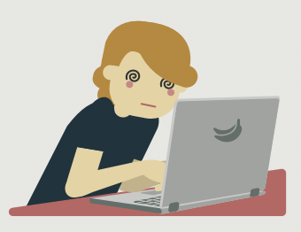

- Ciberadicción. Implica un problema de adicción a Internet.
- Cyberbullying.
- Suplantación o robo de identidad.
- Phishing.
- Grooming.
- Sexting.

Internet es una red de computadoras interconectadas a nivel mundial en forma de tela de araña. Consiste de servidores (o "nodos") que proveen información a aproximadamente 100 millones de personas que están conectadas entre ellas a través de las redes de telefonía y cable.
 El phishing es una técnica de ingeniería social
que consiste en el envío de correos electrónicos
que suplantan la identidad de compañías u
organismos públicos y solicitan información
personal y bancaria al usuario.
El phishing es una técnica de ingeniería social
que consiste en el envío de correos electrónicos
que suplantan la identidad de compañías u
organismos públicos y solicitan información
personal y bancaria al usuario.
El Grooming es el acoso sexual a niños, niñas y adolescentes a través de medios digitales, consistente en acciones desplegadas generalmente por personas adultas, de cara a establecer contacto con fines sexuales.
El término "sexting" es un neologismo integrado ya plenamente a la literatura médica hispanoparlante que significa "recibir, enviar o reenviar mensajes de texto, imágenes o fotografías que presentan un contenido sexual explícito, vía Internet o teléfono celular".
 El hecho de acechar, vigilar, perseguir
o espiar a una persona de manera continuada
e insistente supone acoso. A nivel jurídico
penal el delito de stalking protege el derecho
a la libertad individual de la víctima,
y el derecho a llevar una vida tranquila
sin sufrir hostigamiento alguno.
El hecho de acechar, vigilar, perseguir
o espiar a una persona de manera continuada
e insistente supone acoso. A nivel jurídico
penal el delito de stalking protege el derecho
a la libertad individual de la víctima,
y el derecho a llevar una vida tranquila
sin sufrir hostigamiento alguno.
Es una forma de chantaje en la que se amenaza a una persona con divulgar y hacer públicas imágenes o videos de su intimidad sexual.
Challenges, palabra en inglés que significa "desafíos", consisten en hacer desafíos insólitos y publicarlos en las redes sociales, principalmente en el TikTok y el Instagram. Muchas veces son coreografías simple y chistosas en el ritmo de músicas específicas.
La suplantación de identidad consiste en hacerse pasar por otra persona en Internet. ¿Y por qué suplantar a alguien? ¿Qué necesidad hay de hacer esto? Aunque los motivos pueden ser varios, es habitual que se haga para fastidiar a la persona suplantada y ocasionarle algún daño.
Fake News en español significa “Noticias Falsas”. Como su nombre lo indica, son noticias que no son ciertas o que han sido sacadas de contexto. Este es un fenómeno que ha existido desde que el ser humano utiliza el lenguaje para comunicarse. Por ejemplo, los “chismes” generalmente son noticias falsas. Alguien inventó el chisme para su propio beneficio o para perjudicar a otra persona porque se molestó con esa persona. La diferencia es que las “Fake News o Noticas falsas” son chismes o mentiras que se difunden en Internet y en las redes sociales, como por ejemplo en el buscador de Google, Facebook o Youtube.
 La ciberadicción es la pérdida del control frente al uso racional del internet la cual afecta de forma negativa a la vida de la persona, entre otras palabras es el uso excesivo del internet a través de los medios electrónicos (computadora, teléfono celular, televisión).
 El acoso laboral, popularmente conocido con el
término de mobbing, se define como el conjunto
de acciones continuadas de violencia psicológica
injustificada (insultos, humillaciones, menosprecios,
aislamiento, difusión de rumores, etc.), y a veces
incluso física o sexual, que superiores, compañeros
de trabajo o la propia empresa ejercen sobre la víctima.
Todas estas conductas se realizan de forma consciente,
abusiva y premeditada con el objetivo de degradar el
clima laboral de la víctima de modo que sienta miedo al
ir a trabajar y que acabe por abandonar su puesto de
trabajo.
El acoso laboral, popularmente conocido con el
término de mobbing, se define como el conjunto
de acciones continuadas de violencia psicológica
injustificada (insultos, humillaciones, menosprecios,
aislamiento, difusión de rumores, etc.), y a veces
incluso física o sexual, que superiores, compañeros
de trabajo o la propia empresa ejercen sobre la víctima.
Todas estas conductas se realizan de forma consciente,
abusiva y premeditada con el objetivo de degradar el
clima laboral de la víctima de modo que sienta miedo al
ir a trabajar y que acabe por abandonar su puesto de
trabajo.
Una violación de la seguridad de los datos se produce cuando los datos de los que ustedes son responsables sufren un incidente de seguridad que da lugar a la violación de la confidencialidad, disponibilidad o integridad de los datos.
 Malware es un término que abarca cualquier
tipo de software malicioso diseñado para dañar
o explotar cualquier dispositivo, servicio o
red programable. Los delincuentes cibernéticos
generalmente lo usan para extraer datos que pueden
utilizar como chantaje hacia las víctimas para
obtener ganancias financieras.
Malware es un término que abarca cualquier
tipo de software malicioso diseñado para dañar
o explotar cualquier dispositivo, servicio o
red programable. Los delincuentes cibernéticos
generalmente lo usan para extraer datos que pueden
utilizar como chantaje hacia las víctimas para
obtener ganancias financieras.
 se trata de la sobrecarga o exceso de
información con la que nos encontramos
ctualmente, hasta tal punto de saturar
la propia capacidad humana para procesar
y analizar tanta información que recibimos
todos los días, en nuestro entorno social,
en la televisión o en la Internet.
se trata de la sobrecarga o exceso de
información con la que nos encontramos
ctualmente, hasta tal punto de saturar
la propia capacidad humana para procesar
y analizar tanta información que recibimos
todos los días, en nuestro entorno social,
en la televisión o en la Internet.